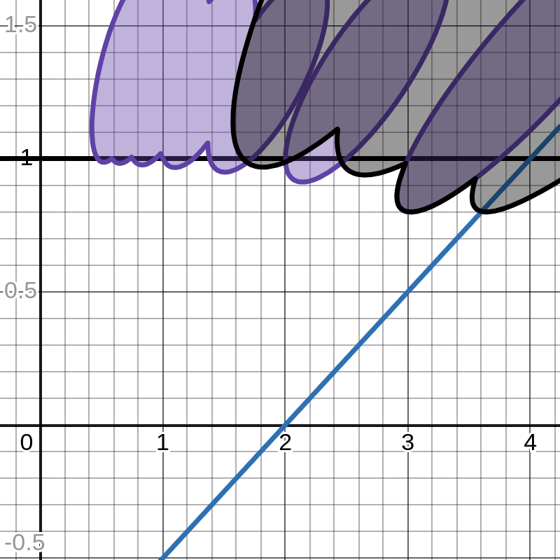
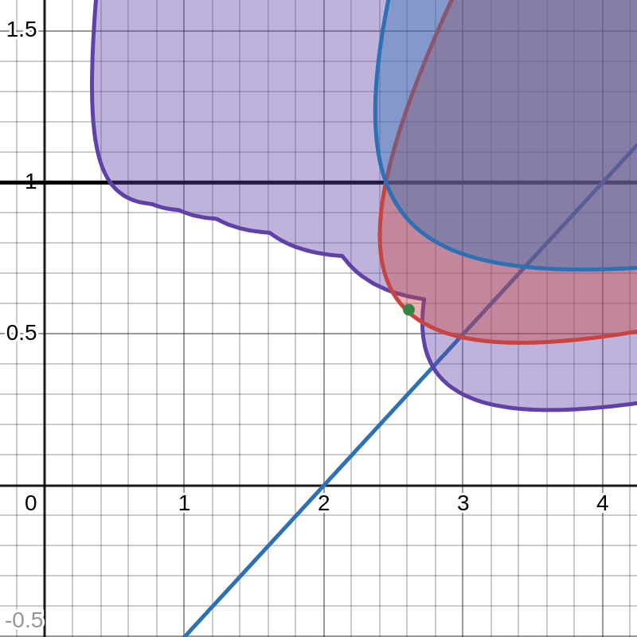

The main arguments on heavy-ball cycling and 1D non-acceleration are formalized in Lean 4 with Mathlib, with the formalization generated entirely by AI.
Abstract
Despite having an asymptotically optimal rate of convergence on convex quadratics, the acceleration of Polyak's heavy-ball method and a characterization of its dynamics within more general settings have remained long standing open problems. Recently, the work of Goujaud et al. [Math. Program. (2025)] made progress regarding acceleration in the context of smooth, strongly convex minimization: for a small enough inverse condition number, either the method does not accelerate on quadratics, or there exists a smooth strongly convex function such that heavy-ball cycles over the roots of unity. The constructed functions have two variables, thus leaving the question of acceleration over univariate functions open. In this work, we use a Fourier-based analysis to i) provide a proof for the non-acceleration of the heavy-ball method over the class of univariate smooth strongly convex functions. We also ii) provide a strict enlargement of the previous root-of-unity cycling region, with insights regarding the "fractional" sets of Goujaud et al. [arXiv:2502.19916], and iii) give a higher dimensional cycling instance which is not covered by root-of-unity cycling.
Problem
Whether Polyak's heavy-ball method can accelerate on univariate smooth strongly convex functions was left open, because earlier non-acceleration results relied on two-dimensional root-of-unity cycles.
Approach
A Fourier-based analysis characterizes the parameter regions where heavy-ball cycles over m-jump roots of unity. Rotating such a cycle by a chosen angle and projecting it onto the real line gives 1D cycles that satisfy the interpolation conditions. The analysis is extended to general frequencies and higher-dimensional cycles, and related to Lur'e-system absolute stability. The main arguments are formalized in Lean 4 with Mathlib; the formalization was AI-generated.

(a) \kappa=0.8 . Root-of-unity regions with m=1 (purple) and m=2 (black), plotted using the characterization in Lemma 3.1 . The black region is not covered by the ordered m=1 root-of-unity region and belongs to the augmented region.
Results
Heavy-ball does not accelerate on univariate smooth strongly convex functions. The augmented root-of-unity cycling region strictly enlarges the ordered one. A higher-dimensional cycling instance not covered by root-of-unity cycling is given, and fractional regions are shown not to automatically certify cycling.

(b) \kappa=0.3 . The red region corresponds to the fractional condition obtained from the \Delta=1 residual of (K,m)=(7,2) . The blue region is the stricter genuine cycling region obtained by checking the maximal residual. Hence fractional regions are not automatically cycling certificates.